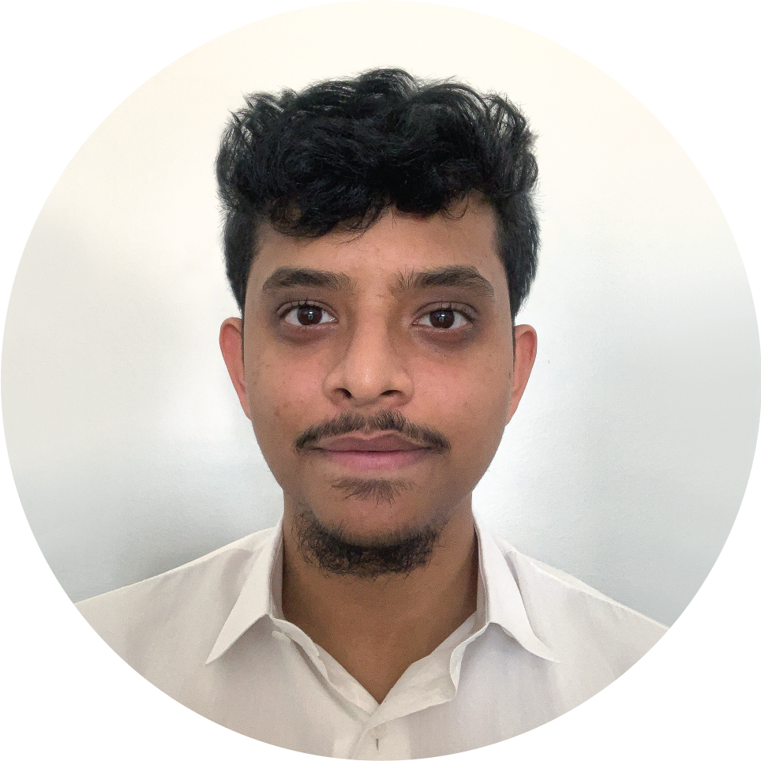

Hello, my name is Bhavindu.
I’m a 3rd-year undergraduate student from OCAD University pursuing a
BDES Environmental Design: Architecture Specialization. Before my
introduction to architecture, I was an avid practitioner of visual
arts and its various disciplines, namely, drawings and painting. Even
though I have now transitioned away from studying visual arts, I still
allow the artistic foundation I was brought up in to inspire and
permeate throughout my design exploration. Hence, my designs are
founded through a rigorous process of ideation which I value equal to
the final design output. For me, what’s most fulfilling through it all
is looking at an architectural design and being able to track back the
process of ideation, reliving all the small decisions made in a
design’s journey through to its eventual manifestation. That timelapse
of visual creativity is something I treasure deeply.
Aside from architecture and design, I am proud to say that I have played professional cricket in Canada and Sri Lanka, representing Canada both at the Senior Men’s and Under 19 teams
at the international stage in various competitions around the world and playing domestic cricket in Sri Lanka. At the age of 15, I was selected to represent Canada at the Under 19 Cricket
World Cup in Bangladesh. One year later, I was drafted into the Senior Men’s team where I consistently played at many world cricket events. At the age of 17, I took over the captaincy
of the Under 19 team, leading Canada through World Cup Qualifiers into 2018's Under 19 Cricket World Cup in New Zealand. Playing professional cricket has instilled me in many
qualities including discipline, work ethic, teamwork, and leadership, all of which I carry over to my work in architecture and design.